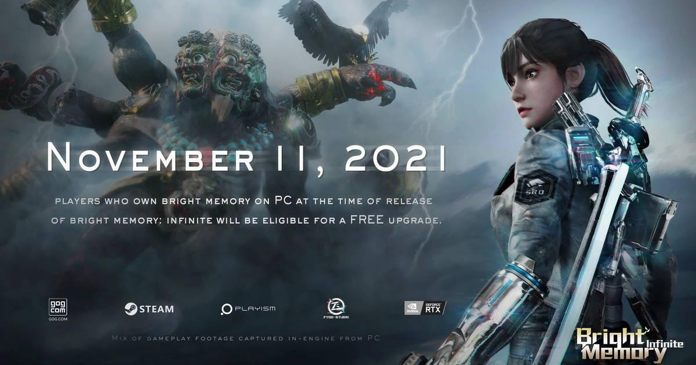
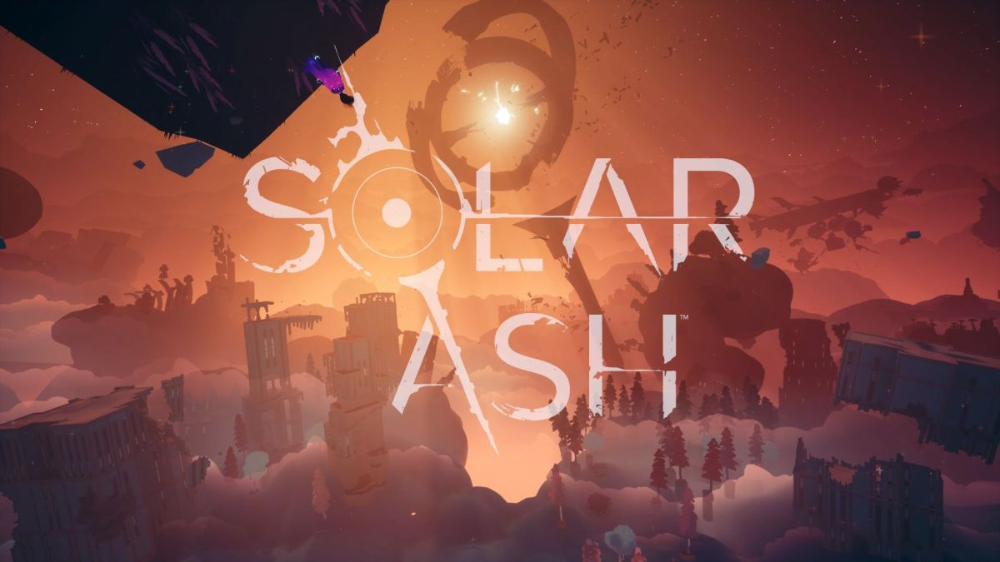
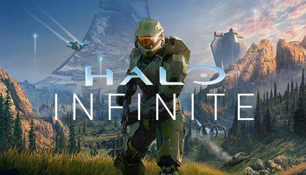
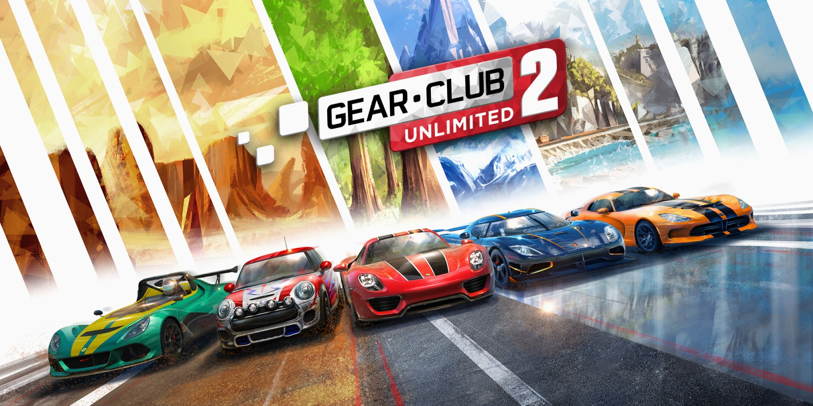

Bright Memory los jugadores se verán envueltos en una oleada de acción en primera persona, donde podrán usar tanto armas de fuego como de filo para realizar combos y atacar a sus enemigos. Nos trasladará a un futuro distante, invitándonos a encarnar a Sheila, una investigadora de la Natural Science Research Organization. Tras descubrir un artefacto con capacidad de invocación arcana de criaturas sobrenaturales, pronto se verá envuelta en un combate sin descanso contra corporaciones y otros enemigos. Género: Shooter en primera persona
Solar Ash es un videojuego de aventura, acción y exploración con rompecabezas para consolas y PC desarrollado por Hart Machine en el que jugadores controlarán a Rei, que forma parte de los Voidrunner, quien se sumerge en el Ultravoid: un agujero negro gigantesco que destruirá su planeta y muchos otros mundos si no conseguimos evitarlo. Su interior está repleto de paisajes oníricos y escenarios de arquitectura imposible por los que Rei se moverá con movimientos gráciles. Género: Aventura / Aventura de exploración y puzles
Halo Infinite es el nuevo videojuego de la saga Halo desarrollado por 343i, considerado el más ambicioso hasta la fecha y uno de los títulos más caros de la historia de los videojuegos. La idea que surge tras esta nueva entrega de las aventuras del Jefe Maestro, es volver al pasado de la serie, ahondando en la jugabilidad clásica de acción en primera persona, el diseño artístico principal de ciencia ficción y la sensación ambiental de ser protagonistas de una constante lucha en mundos alienígenas. Género: Shooter en primera persona
Gear.Club Unlimited 2 es la secuela del título de conducción exclusivo para Nintendo Switch desarrollado por Eden Games y Microids. Gear.Club Unlimited 2 nos presenta más de 3000 kilómetros de carreteras muy distintas, desde paisajes urbanos a montañas nevadas, desiertos, valles boscosos y costas bañadas por el mar. La secuela tiene en su plantel de opciones jugables más campeonatos, misiones y desafíos, así como mayores posibilidades de personalización y configuración en nuestro garaje. De hecho, el juego ha confirmado que incluirá 51 vehículos distintos procedentes de 22 de los fabricantes más punteros. Género: Coches / Velocidad
